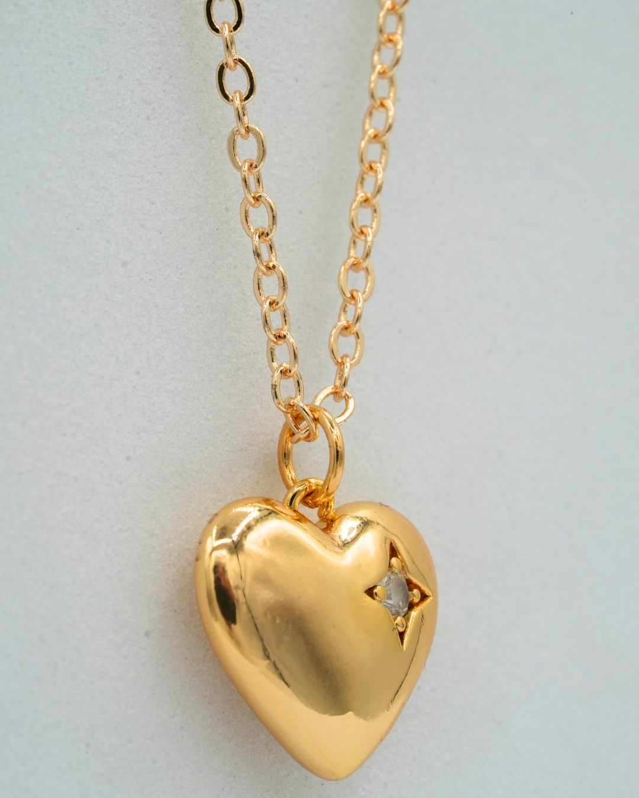

¿Qué grande y brillante!
El Corazón Dorado
Dentro del cofre brillaba intensamente una gema en forma de corazón. El Corazón Dorado parecía latir con luz propia.

Cuando Paco lo tomó entre sus manos, escuchó pasos detrás de él.
Era Valeria.
—Lo siento —dijo ella—. Al principio vine por el tesoro… pero no esperaba enamorarme de ti.
El silencio llenó la habitación.
Ahora todo dependía de la decisión de Paco.